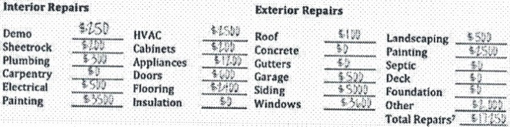
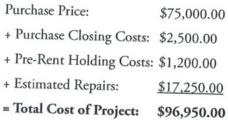

Operating Statement includes following:
The important things to look for are that every bit of income, including the tenants’s deposits, and every important expense have been or can be documented. And don’t fret over the $19 charges at Home Depot; you’re looking for the $1,900 in furnace repairs.
You don’t want any surprises after you take over the building. If the seller says the air conditioners in apartment 2B were replaced two years ago, trust and verify. Ask to see the receipts.
Have all the paperwork reviewed by your accountant and your lawyer. You pay them to find any problems. You want them to sign off on everything before you take it to your lender as part of your loan application.
Make sure to verify:
Have property manager to review operating expenses. They will be able to asses whether the numbers are in line, or off, so you know what questions you need answered.
Total Operating Expenses for a multifamily property typically range anywhere from about 40 percent of Gross Income to as much as 60 percent of Gross Income. If expenses run any higher than that, the property will most likely have a difficult time cash-flowing properly. One primary factor that significantly affects operating expenses is whether the property is sub-metered. For example, in some older apartment buildings a master meter was installed at the time of construction. In this type of situation, the apartments are often rented out as "all-bills-paid" and the owner assumes the responsibility for paying all utilities. Conversely, in most newer apartment buildings, the units are individually metered so that the tenants become responsible for their own utilities. This significantly reduces the Total Operating Expenses for the owner.
After analyzing dozens of financial statements for apartment buildings, you will begin to get a feel for every line item on the income statement. You will know, for example, that on average repairs and maintenance will run between 10 and 15 percent, property taxes will run about 5 percent, insurance will run about 2 percent, and management fees will run about 5 percent. These averages will obviously vary from area to area, but if you are focusing on properties in a particular city or county, you will have a good idea of what costs should be on average. By comparing the expenses as reported on the income statement with your expectations, anything outside of the norm will begin to jump out at you. If repairs and maintenance are reported at 4 percent, for example, you will want to investigate further. Something is out of line, and there is a good chance that not all of the repairs and maintenance items are being reported.
Another benchmark you can use to determine relative income and expenses is to break everything down on a per-unit basis. If you know that total operating expenses are averaging $3.25 per square foot in your area and the income statement you are analyzing reflects something outside of the normal scope, then you will want to investigate further to determine why. The bottom line is be aware of red flags when you see them.
Visit the building (not every room, this will be done later during walk through step) with property manager in order to get an idea on what it will take to run the building, how to minimize the expenses, and upgrades the building may need. This is the time to put rough numbers on the paper and analyze if the cost of the needed repairs will still allow you to be profitable.
How much work does this property need before it's rent ready? Right now you may not have been to the property, so you might need to make some assumptions. Once you've walked through the property, you'll be able to refine those assumptions to be more accurate. Then, after the inspection and bids from contractors, you'll be able to get even more specific. To help estimate the rehab budget, I recommend filling out the following form with your best estimates. These are the 24 main categories of repairs you'll likely face when estimating the repairs.

Is the actual amount you'll pay for the property. This is not necessarily the asking price or what it's worth. This is what you'll actually pay. For example:

At this point, we can see the total amount we'll have in this property and can compare this with other homes selling in the area. After all, a fixer-upper like this house doesn't make sense if all the other homes that are already fixed up cost around the same price (after all, why go through the hassle of a rehab if you aren't getting something for your work?). In this case, however, I can see numerous examples of similar fixed-up properties selling in the $110,000 to $130,000 range, so I actually expect the ARV (after repair value) for this property to be approximately $120,000. So far, so good.
Run property analysis calculator on adjusted numbers to determine new NOI. Keep in mind you haven't walked through every room in the property with the property manager, haven't done PCA nor environmental reports and once you do you may adjust these numbers again based on what you’ll find during the inspection. Once you determine new NOI, if it looks good, base you initial offer price on it.
Buy for less than you could sell it today. Ideally 30% or more below current market value. It will also help in case unexpected expenses come up after you close on the property. A popular rule of thumb used by many house flippers is the 70% rule. This rule states that the most a flipper should pay for a property is 70% of the after repair value (ARV, what the house is worth after it has been fixed up) less rehab costs. So, a house that has an ARV of $150,000 and needs $30,000 worth of rehab could be bought for $75,000, because $150,000 x .7 = $105,000 $105,000 - $30,000 = $75,000
A real estate agent friend of mine once told me, "If I submit an offer, and it doesn’t make me blush, I offered too much!" In other words, when you’re trying to get a good deal, submitting offers should make you a bit uncomfortable! So get out there, make some offers, blush a bit, and get a few killer good deals.
Estimate and pay a price based only on how the property is operating today, not based on how the broker or seller tells you it can potentially operate. By doing so, you will prevent yourself from paying more than a property is really worth.
If the deal does not provide sufficient cash flow to meet the DSCR requirements with minimum required down payment, chances are you will want to take a pass on the deal and go on to the next one. Do not make the mistake of saying, "Oh, I’ll just put more money down to lower my monthly payments." True, this will help to bring your DSCR into line. However, by putting more money down, you are reducing the cash and total ROIs.
Even if asking price looks like a bargain, hold back your excitement. Verify bargain potential with detailed and accurate feature and price information on com sales. Even when asking price seems low relative to cash flow, replacement cost, and affordability ratios, you might still buy for a lower price. Also, be careful with the properties that are priced below market value. The seller would be putting property for sale at the market price if he was able to. There is a reason why the seller typically is trying to unload the property below the market value and that is because there is an issue there is something happening.
If after your analysis you don't think property is a good investment, in other words, if the net cash flow is too low, then you may need to walk away from the deal or offer a much lower price to make the numbers work.
Future repairs are difficult to estimate because a lot of variables come into play. A house that is 90 years old will likely have significantly more repair costs than a house built last year. A recently rehabbed house will also likely have fewer repairs needed than a home untouched for decades.
Going through financial statements will enable you to evaluate the performance of the apartment complex over an extended period of time. You should be able to detect any trends, such a systematic increase in rents. Conversely, if you observe flat or declining rental rate, along with an increase in the vacancy rate, you might conclude that the market in that particular area has softened. This could also indicate management problems, which can be overcome much more easily than a softening market.